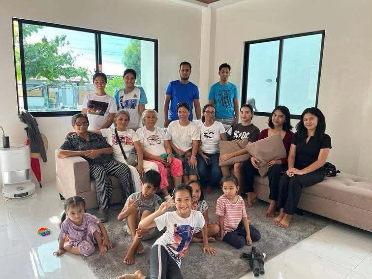
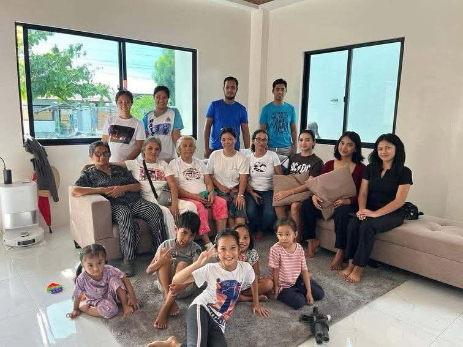

Don Macchiato Brew Tech & Billing System
KitchenSphere: Personal Recipe & Meal Planning App
Bachelor of Science in Information Technology | 3rd Year
 

I am a 3rd year Bachelor of Science in Information Technology student. My goal is to successfully complete my studies and achieve my dreams in Information Technology. I am dedicated to enhancing my programming and studying skills. My future plan is to enroll in Criminology to gain more knowledge and open more opportunities. I am open to accepting any job that God has planned for me, working hard, and doing my best to grow, succeed, and make my family proud.
Email: seasshane@gmail.com
Phone: 09770766536
Visit this Facebook business page at facebook.com/printastic25 for printed T-shirts and unique souvenirs facebook.com/printastic25